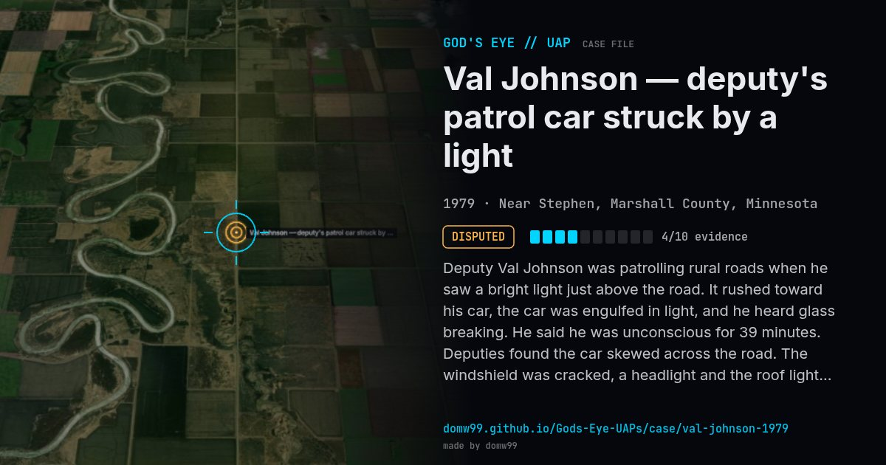

Val Johnson — deputy's patrol car struck by a light

Deputy Val Johnson was patrolling rural roads when he saw a bright light just above the road. It rushed toward his car, the car was engulfed in light, and he heard glass breaking. He said he was unconscious for 39 minutes. Deputies found the car skewed across the road. The windshield was cracked, a headlight and the roof light were broken, and an aerial was bent. Both his watch and the car's clock were 14 minutes slow. A doctor compared his eye irritation to "welder's burns".
Explanation
UFO researchers (Allan Hendry, Jerome Clark) consider it significant. Skeptic Philip Klass argued it was a hoax and that Johnson damaged the car himself. The patrol car is on display at the Marshall County museum.
What was seen
Shape: Beam of bright light just above the road
Witnesses: 1 (Deputy Sheriff Val Johnson)
Duration: Seconds; ~39 minutes unconscious
Browse
- United States
- 1970s
- Disputed
- Close encounters
- Physical traces
- Police witnesses
- Reported electromagnetic effects
- Documented physiological effects
- Lights and fireballs